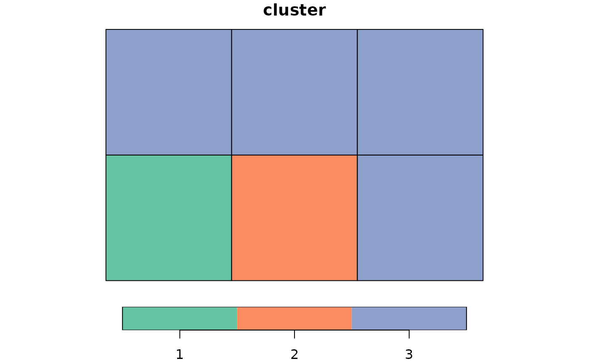
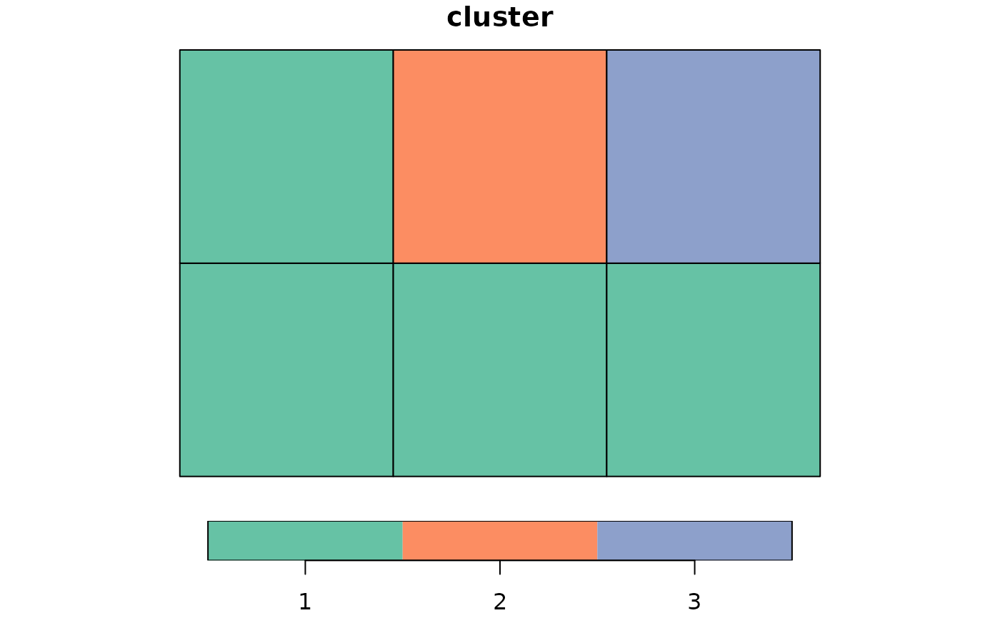
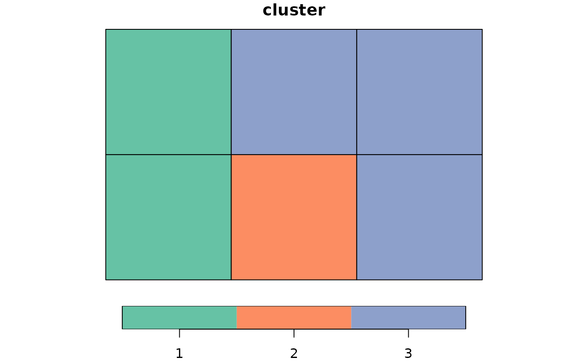

Creates an undirected graph from spatial polygonal data, computes its minimum spanning
tree (MST), and generates nclust clusters. This function is used to initialize
cluster membership in a clustering algorithm, such as sfclust.
Arguments
- x
An
sforsfcobject representing spatial polygonal data. It can also be amatrixorMatrixobject with non-zero values representing weighted connectivity between units.- nclust
Integer, specifying the initial number of clusters.
- weights
Optional
numericvector ormatrixof weights between units inx. It should have dimensionsn^2, wherenis the number of units inx. If NULL, random weights are assigned.
Value
A list with three elements:
graph: The undirected graph object representing spatial contiguity.mst: The minimum spanning tree.membership: The cluster membership for elements inx.
Examples
library(sfclust)
library(sf)
x <- st_make_grid(cellsize = c(1, 1), offset = c(0, 0), n = c(3, 2))
# using distance between geometries
clust <- genclust(x, nclust = 3, weights = st_distance(st_centroid(x)))
print(clust)
#> $graph
#> IGRAPH be6eede UNW- 6 11 --
#> + attr: name (v/c), weight (e/n)
#> + edges from be6eede (vertex names):
#> [1] 1--2 1--4 1--5 2--3 2--4 2--5 2--6 3--5 3--6 4--5 5--6
#>
#> $mst
#> IGRAPH 6d175d2 UNW- 6 5 --
#> + attr: name (v/c), vid (v/n), weight (e/n)
#> + edges from 6d175d2 (vertex names):
#> [1] 1--4 2--3 3--6 4--5 5--6
#>
#> $membership
#> 1 2 3 4 5 6
#> 1 2 3 3 3 3
#>
plot(st_sf(x, cluster = factor(clust$membership)))

# using increasing weights
cluster_ini <- genclust(x, nclust = 3, weights = 1:36)
print(cluster_ini)
#> $graph
#> IGRAPH f082866 U-W- 6 11 --
#> + attr: weight (e/n)
#> + edges from f082866:
#> [1] 1--2 1--4 1--5 2--3 2--4 2--5 2--6 3--5 3--6 4--5 5--6
#>
#> $mst
#> IGRAPH 296c41c U-W- 6 5 --
#> + attr: vid (v/n), weight (e/n)
#> + edges from 296c41c:
#> [1] 1--2 1--4 1--5 2--3 2--6
#>
#> $membership
#> [1] 1 1 1 1 2 3
#>
plot(st_sf(x, cluster = factor(cluster_ini$membership)))

# using on random weights
cluster_ini <- genclust(x, nclust = 3, weights = runif(36))
print(cluster_ini)
#> $graph
#> IGRAPH 5a8a6a7 U-W- 6 11 --
#> + attr: weight (e/n)
#> + edges from 5a8a6a7:
#> [1] 1--2 1--4 1--5 2--3 2--4 2--5 2--6 3--5 3--6 4--5 5--6
#>
#> $mst
#> IGRAPH a10941a U-W- 6 5 --
#> + attr: vid (v/n), weight (e/n)
#> + edges from a10941a:
#> [1] 1--4 2--4 2--6 3--5 3--6
#>
#> $membership
#> [1] 1 2 3 1 3 3
#>
plot(st_sf(x, cluster = factor(cluster_ini$membership)))
